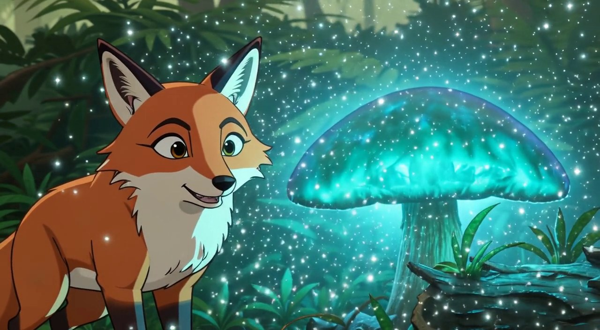
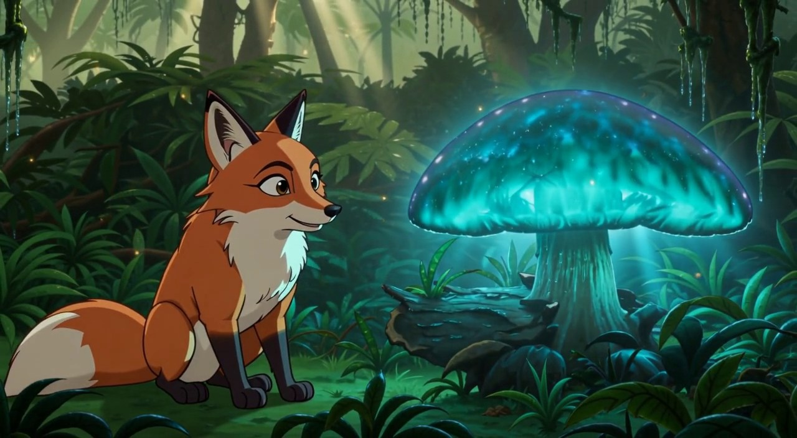
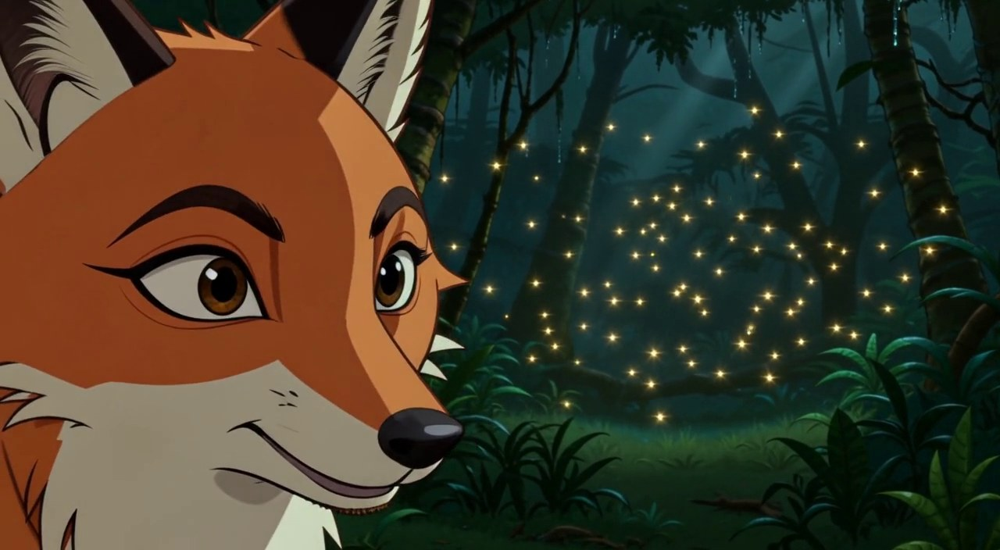
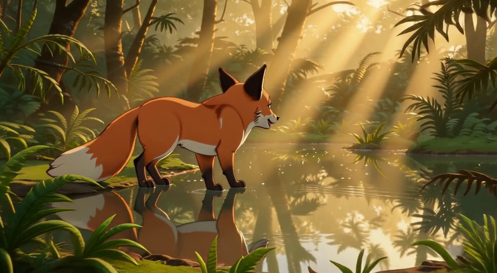
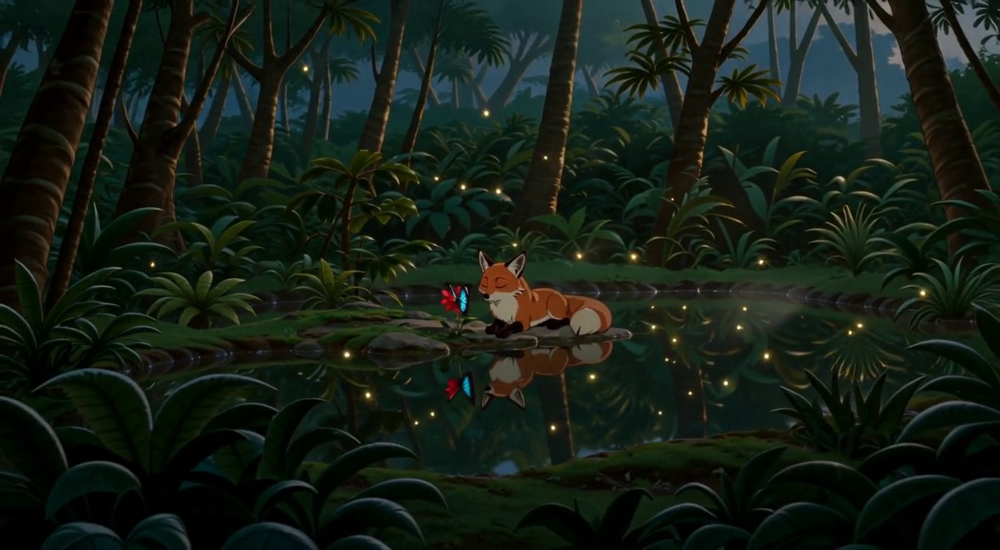

Phase 37A《雨林奇遇》— 完整故事 9/9 完成
冻结剧本 9 镜 x 2 故事段 ｜ 全部生成成功 ｜ 链闭合 ｜ 重试 2 次（N6/N9）｜ 其余 7 镜一次通过
N1（s09_c01）· 晨雾小径 · 8s · 链根参考直生
[人工: minor]
预期尾帧：
狐狸在小径中段减速站定，四足着地，身体朝向画面右侧，耳朵竖起
实际末帧：

Vision 建议 minor
| expected_tail_match | CLOSE - fox is stopping but not yet at rest position; ears are up but body language suggests motion continuing |
| character_pose_state | Fox is standing still but not yet fully stationary - appears to be mid-deceleration rather than completely stopped |
| character_position | Fox positioned on the path in the middle ground, facing right as expected |
| camera_state | Static shot composition consistent with previous frame |
| action_endpoint | Fox is slowing down/stopping but not yet fully static - body still shows some forward momentum |
| next_shot_readiness | Ready for next shot to begin from this near-stationary position |
| identity_consistency | The fox is correctly depicted with orange fur, white-tipped tail, and characteristic fox features |
| environment_consistency | Forest path environment matches expected setting with dappled sunlight, ferns, and trees |
| unexpected_elements | None - all elements align with expected storyboard direction |
执行者备注：2D 风格继承链根；朝向右侧符合预期；姿态为中途减速奔跑而非完全站定。N2 首句「忽然停下」自然吸收。
N2（s09_c02）· 发现发光蘑菇·道具交互 · 10s · 接力 N1→N2
[人工: minor]
预期尾帧：
狐狸鼻尖仍贴近蘑菇帽，蘑菇亮起，光尘悬浮在两者之间
实际末帧：

Vision 建议 none MAE: 54.7
| expected_tail_match | The final frame aligns with the expected tail description — fox's nose near the glowing mushroom with suspended light dust. |
| character_pose_state | Fox is standing alert, head turned toward the glowing mushroom, mouth slightly open. |
| character_position | Fox positioned on the left side of frame, facing right toward the mushroom. |
| camera_state | Medium shot, eye-level perspective, static framing. |
| action_endpoint | Scene ends with fox gazing at the illuminated mushroom, suggesting wonder or discovery. |
| next_shot_readiness | Frame ends cleanly on a moment of magical stillness, allowing for natural transition into next shot. |
| identity_consistency | Fox appears consistent with typical animated fox design: orange fur, white chest, large ears. |
| environment_consistency | Forest setting with glowing mushroom and floating light particles is maintained. |
| unexpected_elements | No unexpected deviations from the planned tail sequence. |
| prop_state | Mushroom is glowing with blue-green light; sparkling particles float in the air between fox and mushroom. |
| action_endpoint | Scene ends with fox gazing at the illuminated mushroom, suggesting wonder or discovery. |
执行者备注：蘑菇荧光/光尘/驻足观察全中；鼻尖接触未落尾帧（头未低下）。N3 首句自然吸收。
N3（s09_c03）· 蹲坐打量·静态反应 · 5s · 接力 N2→N3
[人工: none]
预期尾帧：
狐狸坐姿稳定，面朝右侧蘑菇，头微歪
实际末帧：

Vision 建议 none MAE: 45.5
| expected_tail_match | Fully matches expected tail: seated fox facing right at mushroom with slight head tilt |
| character_pose_state | Fox is in stable seated position facing right toward the mushroom, head slightly tilted upward in curiosity |
| character_position | Fox seated on forest floor to left of frame, oriented toward right-side glowing mushroom |
| camera_state | Medium shot at eye level with fox, shallow depth of field focusing on fox and mushroom |
| action_endpoint | Fox's pose represents a stable observational endpoint—no further motion indicated |
| next_shot_readiness | Strong continuity ready—stable composition allows smooth transition to next shot |
| identity_consistency | Fox correctly depicted as orange-red with white chest and black-tipped ears, matching expected character design |
| environment_consistency | Dense forest with hanging vines and glowing blue mushroom matches planned magical forest setting |
| unexpected_elements | Sparkling particles around mushroom and soft ambient glow not mentioned in expected tail but enhance visual appeal |
| prop_state | Glowing blue mushroom stationary on log, no movement or transformation detected |
执行者备注：坐姿/朝向/蘑菇道具跨镜一致全中；头微歪幅度弱于剧本——外观级。
N4（s09_c04）· 萤火虫追逐·跃倒木·高运动 · 10s · 接力 N3→N4
[人工: minor]
预期尾帧：
狐狸从倒木落地后减速站稳，背对镜头面向深处，萤火虫在前方盘旋
实际末帧：

Vision 建议 major MAE: 47.3
| expected_tail_match | Mismatch. The expected tail describes a wide view of the fox standing away from camera with fireflies ahead. This frame is a tight close-up of the fox's face. |
| character_pose_state | Close-up profile view; character is stationary or moving very slowly with eyes fixed ahead. |
| character_position | Extreme close-up on the left side of frame, occupying foreground. This is a significant position change from expected full-body rear view. |
| camera_state | Camera is static in an extreme close-up on the character's face. This does not match the expected wide/medium shot from behind. |
| action_endpoint | Action appears to have halted or transitioned to a reaction shot; no active movement like landing or stabilizing is visible. |
| next_shot_readiness | High continuity risk. The extreme close-up creates a hard jump cut if the next shot begins with a wider or rear angle. |
| identity_consistency | Correct species, style, and coloration for a fox character consistent with prior framing. |
| environment_consistency | Consistent dark forest setting with bioluminescent elements and dense undergrowth. |
| unexpected_elements | The camera distance is drastically different. Instead of seeing the full body from behind, we see only the face in profile. |
| camera_state | Camera is static in an extreme close-up on the character's face. This does not match the expected wide/medium shot from behind. |
| action_endpoint | Action appears to have halted or transitioned to a reaction shot; no active movement like landing or stabilizing is visible. |
执行者备注：正面特写吸引子发作（36.md §3.7 复现）：叙事命中（停下看萤火虫）但机位大偏——脸部大特写替代背面全景。用户：接点不一致+运动稍怪，可接受。
N5（s10_c01）· 空地水塘·环境变化 · 8s · 接力 N4→N5 跨段
[人工: minor]
预期尾帧：
狐狸立在水塘边缘低头饮水，水面有倒影，身后是雨林
实际末帧：

Vision 建议 minor MAE: 70.5
| expected_tail_match | Close match. The rainforest setting and the fox are correct, but the specific action of 'drinking' is slightly off as the animal is standing up. |
| character_pose_state | The fox is standing upright on all fours at the water's edge. While near the water, its head is upright and facing forward rather than lowered into the water for drinking. |
| character_position | Centered at the water's edge, aligned with the bank. |
| camera_state | Eye-level medium shot, capturing the full body of the fox and the surroundings. |
| action_endpoint | The fox is pausing by the water. It does not appear to be actively drinking, as its snout is lifted. |
| next_shot_readiness | Ready. The fox is framed facing right, which provides a clean orientation for any subsequent action or movement. |
| identity_consistency | The character is clearly a fox, rendered in a consistent illustrative style. |
| environment_consistency | The setting matches the rainforest description with dense vegetation, large trees, and strong volumetric lighting. |
| unexpected_elements | The lighting is particularly dramatic with strong sunbeams, but this fits the rainforest atmosphere. |
执行者备注：段B环境切换成立：空地水塘/倒影/午后光全兑现；饮水端点未落尾帧。特写→大远景电影语法切法实测可用。
N6（s10_c02）· 惊跳溅水·状态转换 · 8s · 接力 N5→N6
[人工: minor]
预期尾帧：
狐狸站在浅水中抬头盯向对岸蕨丛，水花尚未落尽
实际末帧：

Vision 建议 minor MAE: 41.5
| expected_tail_match | Matches expected description - fox standing in shallow water looking toward ferns on opposite bank, though water ripples rather than distinct 'splashes' are visible |
| character_pose_state | Standing still in water, facing right toward ferns, alert posture with ears perked |
| character_position | Center-left of frame, standing in shallow water with body angled slightly right |
| camera_state | Medium shot at eye level, stable framing with consistent lighting angle |
| action_endpoint | Static pose established; fox appears to have just stopped and is observing the opposite bank |
| next_shot_readiness | Ready for next shot; character positioned to observe action happening in ferns on the right |
| identity_consistency | Red fox with white chest and tail tip, consistent with previous depiction |
| environment_consistency | Jungle setting with sunlight rays, shallow water, and dense ferns maintained |
| unexpected_elements | Water shows gentle ripples rather than distinct splash droplets still falling; no visible motion blur suggesting very recent impact |
| camera_state | Medium shot at eye level, stable framing with consistent lighting angle |
执行者备注：attempt1 rejected（ECU+开心表情+地理丢失；Vision 误报 none 在档）；attempt2 显著优：全身侧面+浅水涟漪+面朝蕨丛。重试判据实证：叙事/情绪错→单次重试同时修复机位+情绪+地理。
N7（s10_c03）· 蝴蝶落尾·复杂交互 · 10s · 接力 N6→N7
[人工: minor]
预期尾帧：
狐狸回头面向尾尖，蝴蝶停在尾尖毛上，姿态静止
实际末帧：

Vision 建议 none MAE: 34.9
| expected_tail_match | Strong match. The fox’s head is turned toward its tail, and the butterfly is resting on a fern near the tail tip in a frozen pose. |
| character_pose_state | The fox is turned back toward its tail and the butterfly, with a calm, focused expression. Pose is stable and intentional. |
| character_position | The fox occupies the left to center of the frame, facing right toward the butterfly. The butterfly is positioned on a fern near the fox's tail, matching spatial intent. |
| camera_state | The camera is at a medium close-up, slightly low angle, holding steady on the interaction. No movement detected—stable endpoint framing. |
| action_endpoint | The action of the fox turning to look at the butterfly landing on its tail has been reached and holds. The moment feels complete. |
| next_shot_readiness | Readiness is high. The composition is resolved and clearly frames a static, emotionally coherent beat suitable for transition. |
| identity_consistency | The fox is correctly rendered as a red fox with typical markings; the butterfly is blue and dark-bodied, consistent with the character roles. |
| environment_consistency | The setting is a sunlit forest with ferns and soft backlighting, consistent with a natural outdoor scene. No environment breaks noted. |
| unexpected_elements | None unexpected. All elements align with the planned tail-focused moment. |
| action_endpoint | The action of the fox turning to look at the butterfly landing on its tail has been reached and holds. The moment feels complete. |
执行者备注：全片最难镜：回头+蓝闪蝶+近景+定格全中；接触面从尾尖毛滑到尾旁蕨叶（多体接触精度极限）。MAE 34.9=链新低。
N8（s10_c04）· 蝴蝶红花·静态收势 · 8s · 接力 N7→N8
[人工: none]
预期尾帧：
狐狸趴在石上，蝴蝶停在红花上，两者相对，画面安稳
实际末帧：

Vision 建议 none MAE: 48.3
| expected_tail_match | The final frame matches the expected tail description perfectly: fox resting on the rock, butterfly on the red flower, both relative and still. |
| character_pose_state | The fox is in a resting, prone position on the rock, matching the expected calm state. |
| character_position | The fox is lying on the rock facing left, and the butterfly is perched on the flower to its left, consistent with a relative placement. |
| camera_state | The camera angle is stable and steady, capturing the tranquil scene without motion. |
| action_endpoint | The action has reached a peaceful endpoint: the fox is resting while the butterfly is still. |
| next_shot_readiness | The shot ends in a stable, calm state, ready for a potential cut to a new scene or action. |
| identity_consistency | Fox and butterfly match their established identities with no discrepancies. |
| environment_consistency | The environment is a stable, serene forest with rocks, greenery, and soft lighting. |
| unexpected_elements | None unexpected; the scene is exactly as described. |
执行者备注：近乎完美：蝴蝶落红花+狐狸趴石托腮+双主体同框+塘面倒影。
N9（s10_c05）· 暮色安睡·远景收官 · 5s · 接力 N8→N9
[人工: minor]
预期尾帧：
大远景：狐狸安睡石上，塘面映暮色，林间萤光点点
实际末帧：

Vision 建议 minor MAE: 50.4
| expected_tail_match | Strong match: fox sleeping on rock, pond reflecting twilight, glowing particles in forest — all core elements present |
| character_pose_state | Fox curled asleep on rock beside water; eyes closed, relaxed posture — consistent with '安睡' |
| character_position | Centered on small rock island in middle of pond; framed by foreground foliage and background trees — suitable for wide shot |
| camera_state | Wide establishing shot composition with deep focus from foreground leaves to background canopy; stable and appropriate |
| action_endpoint | Static sleeping pose provides clear narrative endpoint; no motion suggests ongoing action |
| next_shot_readiness | Scene is settled and static; ready for transition to next shot without continuity disruption |
| identity_consistency | Fox character matches expected '狐狸安睡' (sleeping fox) identity; no visual contradiction |
| environment_consistency | Forest pond at dusk with firefly-like lights in trees and water; matches '林间萤光点点' and '塘面映暮色' |
| unexpected_elements | Colorful butterfly near fox’s nose is not mentioned in expected tail; adds minor whimsical detail |
| narrative_state | Peaceful conclusion of day; fox at rest in natural habitat — sets up calm or dream sequence |
执行者备注：attempt1 rejected（醒着+白雾伪影）；attempt2：安睡/暮色/萤光/倒影全中；蝴蝶红花被链继承（守候收尾）。